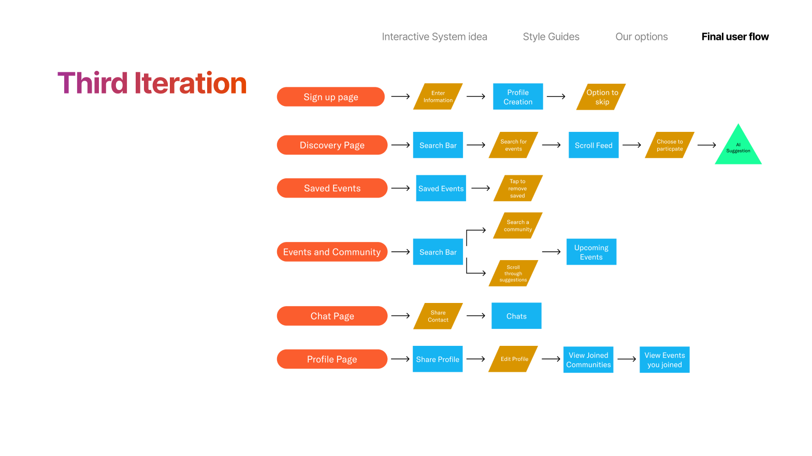

Jackalope
Events app · 2024 · 3 designers at SFU
An events and communities app for international students in Vancouver, with an AI guide that tells you what to expect before you walk in.

The problem
New country, no one to go with
Events are scattered across platforms and word of mouth, rarely matched to anyone’s interests.
The unwritten rules
Nothing tells you what to wear, what to bring or how to act, so many students stay home.

What it does
Tips before you go
Tap Jackalope, our rabbit-and-deer mascot, on any event for what to wear, bring and expect.
Never a dead end
Thumbs-down a tip and you’re offered the organisers, the community chat, or a way to say what went wrong.
Interests do double duty
Picked at sign-up, they rank your feed and show on your profile so similar students find each other.


What testing changed
Stuck in chat
Testers got trapped in messages, so every step now has a cancel and plain labels.
Tips nobody found
Testers didn’t know the tip cards scrolled, so they gained indicators.
A retry that didn’t help
A thumbs-down now routes to people and asks for feedback instead of repeating itself.